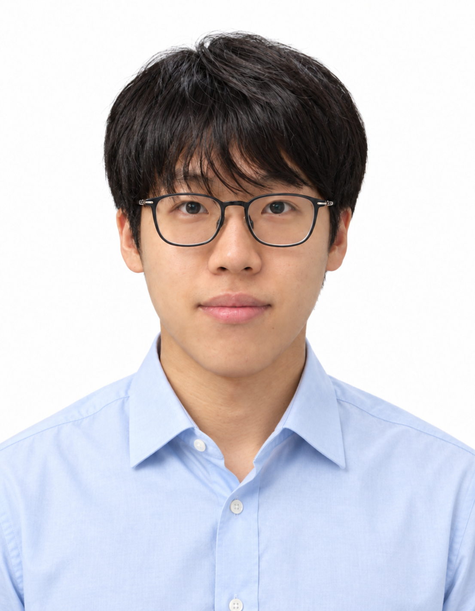

Jihwan Gong 공지환
Electrical & Computer Engineering · Seoul National University
I'm an undergraduate at SNU and a research intern at AIDAS Lab. I'm broadly interested in Physical AI, especially how robots learn from experience, reason about unfamiliar situations, and act in the physical world.
Overall GPA: 4.13/4.30 · Major GPA: 4.09/4.30

Research interests
- Human-like Learning, Reasoning, and Action
- Robots that learn from experience and turn what they understand into adaptive actions.
- Agentic Robotics
- Robots that pursue goals by planning, acting, and revising their plans as the world changes.